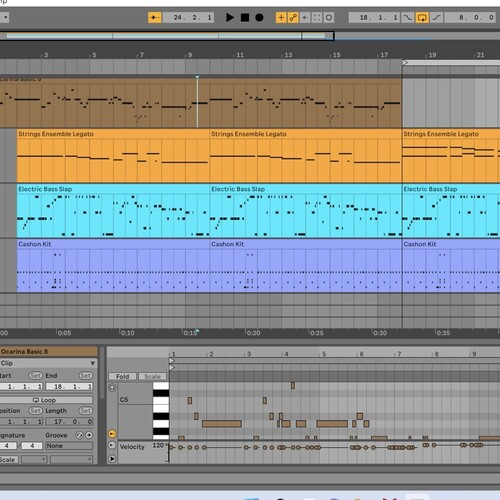
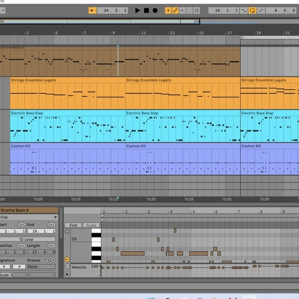
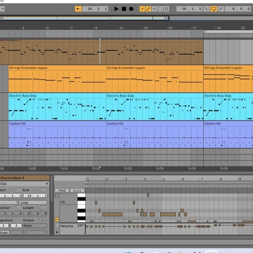

Thibaut Leconte
My name is Thibaut Leconte, a Music Composition major attending the University of California, Riverside. I have had a myriad of experiences with composing music throughout my life thus far, experimenting with different methods and approaches. My primary method of composition is through the use of a digital audio workstation. I currently use Ableton Live 11, however, I have considered attempting to use Cubase to electronically produce more organic-sounding instruments. I have the capabilities to compose based on a certain style of music or sound alone, having put my analytical skills to use to thoroughly understand and appreciate a piece that I am trying to emulate before actually doing so. I have experimented with several different methods of composition, the first of which is using digital audio workstations. I have also used a website that allows me to directly transcribe musical notation onto digital sheets of music to produce the music itself. While the mixing of this tool is not ideal for professional production, it has allowed me to understand how to physically write out music for different instruments.
Of course, composing is only my strong suit, but I have experience in performing music as well. Notably, I have learned to play the piano. I was taught by a freelance jazz instructor. In the three years I spent with him, I learned everything from basic music theory to advanced chord progressions, all of which were necessary to reach the final goal of mine I had set: improvisation. With the knowledge of all the music theory he had taught me over the years, I was able to put them all to use by improvising melodies over a chord progression. This basis of knowledge is what allows me to compose effectively
Finally, to further enhance my composition abilities, I have undertaken many exercises to train myself. Composing requires one to match the themes and mood of the work it is attached to with the music itself to emphasize those feelings in the consumer. Because of this, producing music in itself is not quite enough, but rather composing music specific to a type of emotion. To train this aspect of my composition abilities, I requested that others give me a theme or feeling that I would have to emulate or describe through the use of music. Narrowing down what music I was to produce slowly trained my abilities to compose music for a specific work. Over time, these ideas and themes were narrowed to more and more specific ideas and emotions. As a result, I am now able to compose songs that elicit definite emotions in the listener. I hope to, through my work, inspire others to the potential of music to reach the soul and define emotions better than words ever could.
Experience
Composer
• Performer at local piano recitals
• Experience with AbletonLive 11, Flat.io
• Collaboratively created EP
Environmental Activist
• Cleaned beach in Malibu
• Participated in several climate strikes
• Taught younger children of the importance of the environment
National Honor Society Member
• Co-founded bilangual podcast
• Helped set up several major school events
Education
University of California Riverside
Portfolio
 

